Overfitting, underfitting and generalisation
Learning outcomes:
After completing this lesson you should be able to:
-
understand the root cause for overfitting and underfitting
-
take steps to mitigate the problem of overfitting and underfitting
-
pick a suitable cross validation technique to obtain a more accurate measure for the model performance
-
employ cross validation with hyper parameter optimisation.
We saw earlier that our decision tree model was perfectly capable of classifying animals according to our simple dataset, without any mistakes. There was no misclassification occurring. However, this is not always the case. The accuracy of the model was partly due to the simple and deterministic nature of the dataset that we handled and because it is based on clear-cut biological findings.
As we mentioned in unit 1, datasets are often far from perfect. This can be due to data collection deficiencies, as well as the intrinsic errors and noise of the underlying phenomena that the dataset records. This will make coming up with a perfect model not only impossible, but actually undesirable. For example, some labels might be incorrect, or some features inaccurately measured or captured via a device with deficiencies. In cases such as these, if our model comes up with perfect answers for all the training examples, it almost always means that it captured not only the essential relationship between the features and the class, but also the noise and errors in the data. This is undesirable, and can lead to serious problems later when we want to use the model to predict the class of a data point that it has not seen before (during training).
Using the training set to come up with a general relationship between the features and the class that can be utilised to later classify unseen examples is called model generalisation. This generalisation ability is crucial to the success of the model if it is to become a part of comprehensive software solution. Two main problems that can prevent a model from generalisation are overfitting and underfitting. In this context then we need to come up with metrics that are capable of capturing misclassification by the model and its generalisation ability by capturing the misclassification errors of unseen data points.
Training and testing sets
Because of the potential problems mentioned above, we often need to do the same performance measurement for the training set and on another separate dataset that we call the test set.
In order to measure the performance for the test set we need to have the labels available in the same manner that they are in the training set. Remember, classification is a supervised learning problem so we have the answers (labels) available during training and test, but not when we actually use the model to predict unknown labels. If we do not have separate training and test sets, we can simply partition our dataset into two sets, with one acting as a training set and the other as a test set. Note that the term partition indicates that there is no overlap between the training and test set.
Proportions of training and testing sets
Unless there is abundance in the data that captures a simple classification model, or there is already a dataset set aside for testing, we often want to split the original dataset into training and testing sets. The proportion or percentage of the split can be any as along as the training data captures all the different patterns the classes can have. Often we specify a 70% to 30% split for the training and testing respectively.
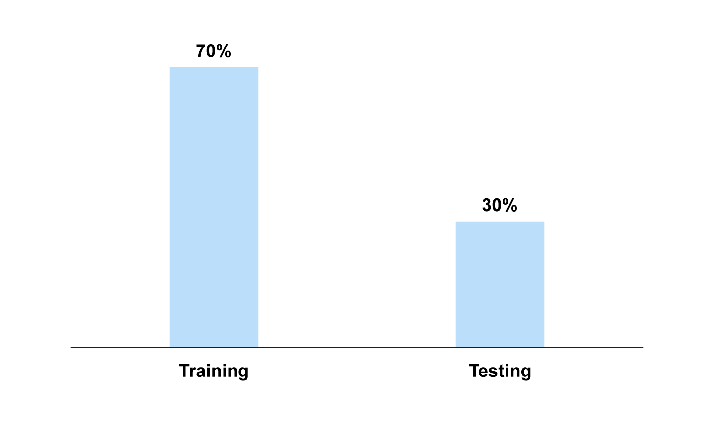
Splitting with stratification
When we split we need to take into account the distribution of the labels in the dataset. We want to reserve the structure of the original dataset in the partitioned training and test sets.
One way to guarantee this property is by stratified sampling. Stratification allows us to preserve the classes’ distribution. So for example if we have binary classes {Class1, Class2} with the first class occupying 60% of the dataset and the second class occupying 40% of the dataset, then when we split with stratification into training and test sets, the distribution of classes {Class1, Class2} inside the training set is 60% to 40% and the same also true for the distribution of the classes inside the test set.
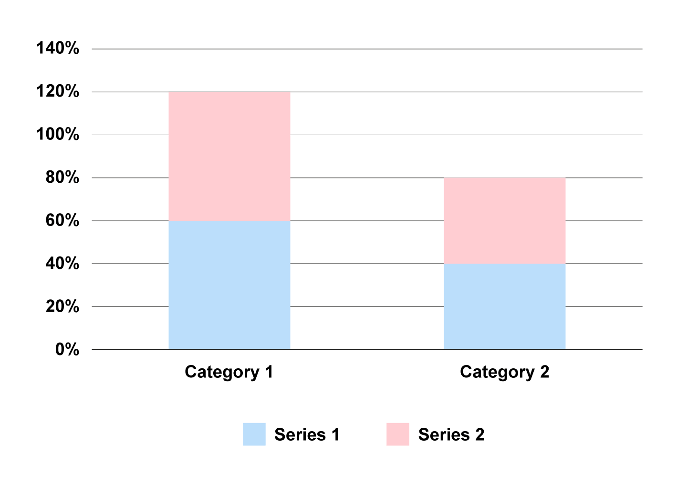
Cross validation, model testing, model selection and model comparison
Model testing is the process of testing to see how good the generalisation ability of the model is.
We use one of the splitting regimes mentioned above, i.e. randomised splitting or with stratification. What we would like to speak about here is how to choose a good hyper parameter for a model. This is called model selection. In model selection we are normally talking about the same classification technique (such as decision trees), but we are interested in which decision tree is best for our problem. In model comparison we are talking about different techniques (such as decision trees vs. k-nearest neighbours) and we would like to come to a conclusion about which technique is the best.
Cross validation
Cross validation is an elaborate testing technique that is useful to balance out the different patterns that might exist in our data. Think about it, when we select a testing set we might be lucky and get a test set that the model is particularly good at predicting its instances, while it may not be as good for other instances. To balance out the ability of the model on different patterns that underline the instances, we can repeatedly select different testing sets and take the average of the testing results to be a more representative value for the performance of the model. Cross validation is one example of this strategy, where we partition our dataset into a number of subsets with equal instances. We hold out a subset for testing, we train on the rest of the subsets, we repeat for all subsets then we take the average. We call those subsets folds.
For example, let us assume that we have a dataset S. To perform a 3 folds cross validation on it we partition our data into 3 almost equal subsets of \(S_{1}, S_{2}, S_{3}\) where we have \(S=\left\{S_{1} \cup S_{2} \cup S_{3}\right\}\). Now we train the model on subset \(\left\{S_{1} \cup S_{2}\right\}\) while we test the trained model on subset \(S_{3}\) which will give a generalisation error \(Err(S3)\).
We repeat the process by training on subsets \(\left\{S_{1} \cup S_{3}\right\}\) and test on subset \(S_{2}\) to obtain the generalisation error \(\operatorname{Err}\left(S_{2}\right)\), then we train on subsets \(\left\{S_{2} \cup S_{3}\right\}\) and test on subset \(S_{1}\) to obtain the generalisation error \(\operatorname{Err}\left(S_{1}\right)\). We then average all the tests to obtain \(\operatorname{Err}(S)\). We can also look into the standard deviation to see how much variation is there in our dataset with respect to our model’s ability to generalise. Figure 2.72 below shows this process. For more details, please have a look at Algorithm 3.2 and 3.3 of Tan et al (2020).
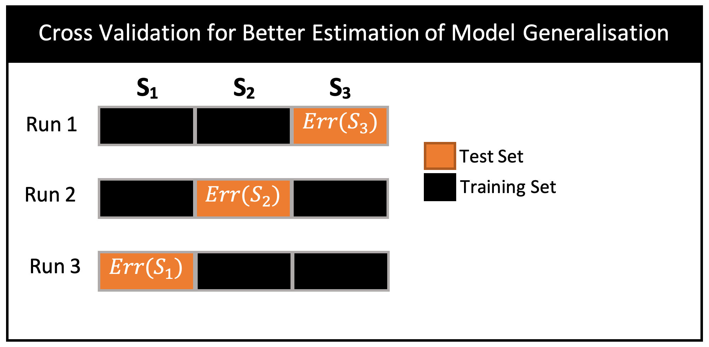
Model selection
Model selection is the process of selecting the best model for the problem at hand, from among several other possible models of similar prediction powers. For example, we can build several decision trees with different depths for the same problem, and each tree would have its own properties and prediction strength. The depth of the DT is an example of what we call a hyper parameter. It is called so because changing this parameter fundamentally changes the properties of the model. The question would be then which one is the best for the problem in hand. We often first perform model selection to pick the best candidate of a set of models and then we do model comparison to pick a final model that corresponds to the best technique. We will talk about model comparison in a later section.
Model selection can be performed mainly in two ways. One approach is to evaluate a set of possible models by enumerating through a set of discrete or discretised hyper parameters values. We will have to then evaluate each one separately and compare between them all to arrive to the best value among these pre-defined values. This is the approach that we will take in this module.
Another approach is to sample from a set of potential models and come up with an algorithm that will help us to find a good estimation of the hyper parameters. This approach will be covered in the Machine Learning module. A third and best approach is to analytically find the best hyper parameter value by analysing the problem and coming up with automated process to give us the best model among many others (and potentially infinite number of models). This is sometimes possible with the Bayesian approach where the hyper parameters (the mean and variance) can be found by performing an expectation maximisation process to find the best hyper parameter. Then we can integrate out (marginalising) the possible hyper parameters values to come up with an estimation of the performance of the model. A method called Bayesian processes is an example of such analytical approach. However, this approach is not always possible due to the difficulties that arises with the mathematical integrals. Again, we will study this type of problem in the Machine Learning module.
Model selection with cross validation
In model selection especially when we do not have enough data, we can use cross validation to aid in the process of selecting the best hyper parameter. We first start by splitting the data into folds (ex. 3 folds). Let us assume that we have hyper parameter \(h\) (ex. tree depth) with values \(v_{1}\) and \(v_{2}\) (ex. Depth = 5 and Depth = 10) and we would like to know what value we should pick for our model. In this case, we can set \(h=v_{1}\) and training the model on subsets \(\left\{S_{1} \cup S_{2}\right\}\) while we test the trained model on subset \(S_{3}\) which will give a generalisation error \(\operatorname{Err}_{v 1}\left(S_{3}\right)\).
We repeat the process by training on subsets \(\left\{S_{1} \cup S_{3}\right\}\) and test on subset \(S_{2}\) to obtain the generalisation error \(\operatorname{Err}_{v 1}\left(S_{2}\right)\), then we train on subsets \(\left\{S_{2} \cup S_{3}\right\}\) and test on subset \(S_{1}\) to obtain the generalisation error \(\operatorname{Err}_{v 1}\left(S_{1}\right)\). We then average all the tests with hyper parameter \(h\) value of \(v_{1}\) to obtain \(\operatorname{Err}_{v 1}\) of our model. We repeat the same process for hyper parameter value \(v_{2}\) to obtain \(\operatorname{Err}_{v 2}(S)\) we then compare \(\operatorname{Err}_{v 1}(S)\) and \(\operatorname{Err}_{v 2}\) and we pick the value that minimises the error, i.e. we pick the value with the least error. Figure 2.73 below summarises the model selection for hyper parameter \(h\).
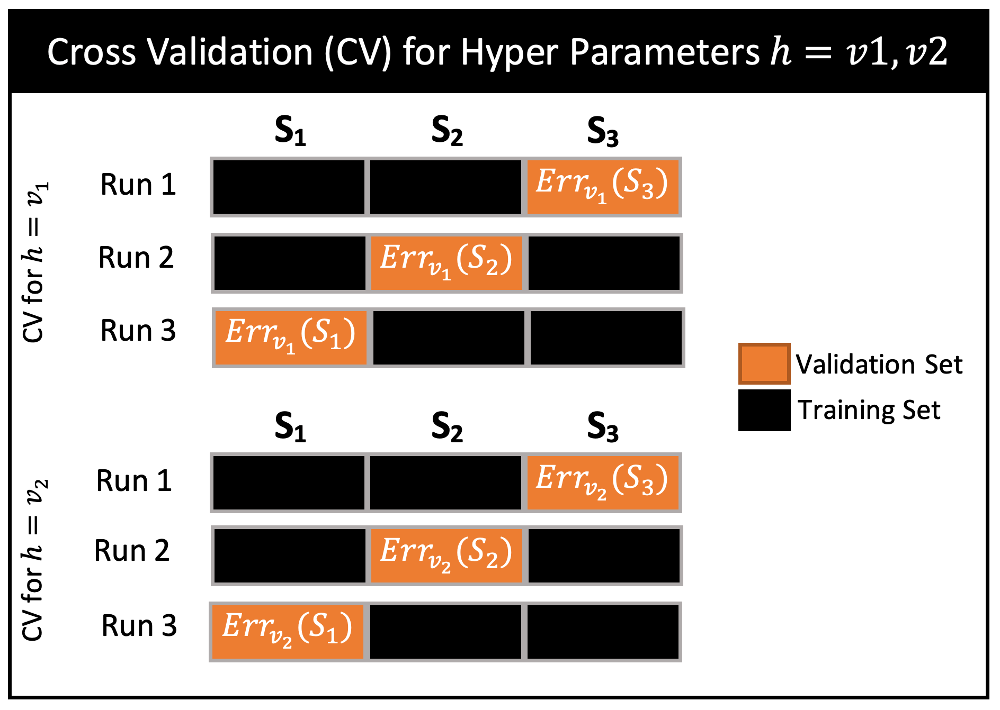
Model evaluation of cross-validated selected model with hyper parameters
After we have selected the best parameters for our model, we want to evaluate the performance of the model. A pitfall would be to use the averaged cross validation error as an indication for the performance of the model. This a biased estimation of the generalisation ability of our model because we have already used the validation data to select the best hyper parameters. Therefore, we need to reserve a portion of the dataset for this final evaluation of the resultant selected model. Figure 2.74 below shows this complete process.
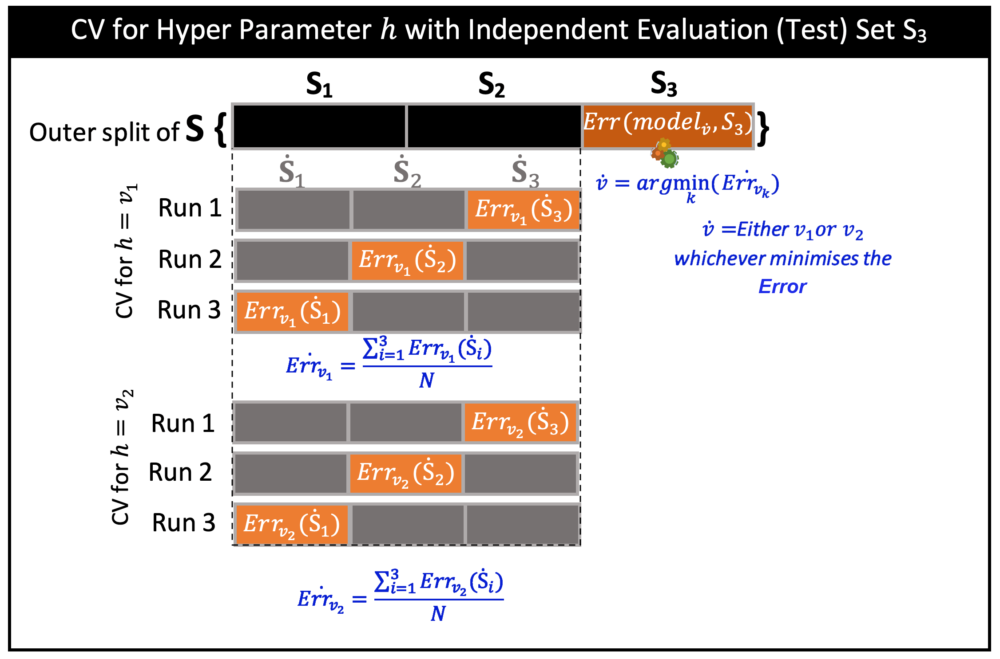
Figure 2.74.
Evaluation of cross validation selected model with grid search for hyper parameters
When we have multiple hyper parameters and we want to select the best combination of values for them, we can employ several search techniques. Here we can take two approaches. One simple approach is to perform an exhaustive search of all the possible combinations of the hyper parameters. We evaluate the models that stem from them and we select the model with the least generalisation error or highest overall accuracy. This is called grid search because each hyper parameter adds a dimension to a grid of possible values.
For example, if we have three hyper parameters the first with 5 values, the second with 5 values and the third with 2 values, then the number of combinations of these values is \(5×5×2=100\) different combinations. So in this approach we need to evaluate all of these values to select the best model among them. There are less computationally expensive but inexact methods that we can employ to search for close to optimal values. These include hill climbing, simulated annealing some of these search methods will be covered in the Algorithms module.
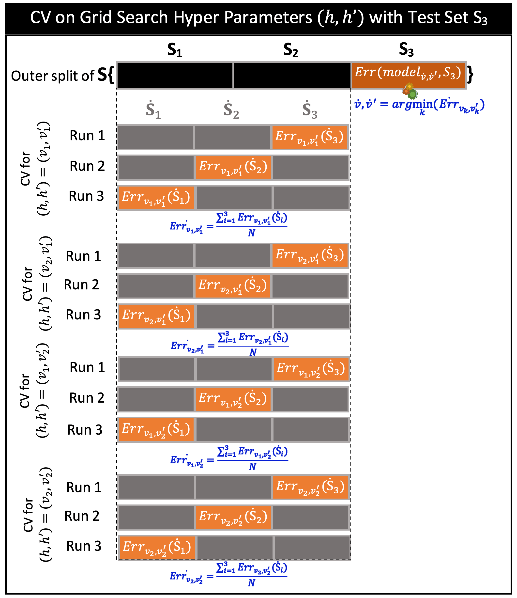
Figure 2.75.
Model evaluation with nested cross validation and hyper parameters
We have shown how to evaluate a selected model on an unseen data in the previous section. However, we should note that this estimation is still a reflection of the model performance only one part of the dataset. But what if we wanted to estimate the performance on all the dataset without seeing the data? Before we show how, it should be clear in your mind that we will not be able to show an overall unbiased performance on all the available data for a particular model. We can however get an estimation by averaging the performances of all possible models that stem from the different parts of the dataset. So this section is not for model selection, it is just for model evaluation.
This is where nested cross validation comes to the rescue. The idea now is that we split our data into folds and we use cross validation to evaluate the performance of the model on an unseen dataset while we use the rest of the data to perform another inner cross validation to select the best parameters. This is called nested cross validation. Note that we cannot use this to select a model (we have already done that in each inner CV) we use it just to come up with an unbiased estimate of the generalisation ability of a technique. There are no specific hyper parameters that we will get out of this procedure. Note, however that you can still use the outer splitting regime without the use of outer cross validation to get a final performance on an unseen test set for a particular selected best model hyper parameters, but bear in mind that this estimation is still a reflection on only part of the dataset. The figure below shows this procedure.
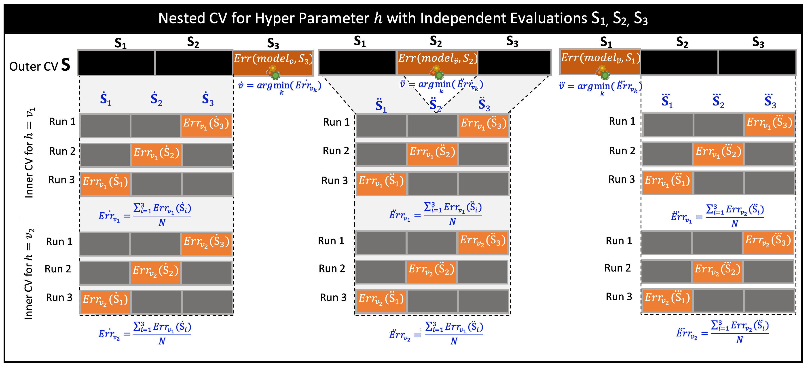
Figure 2.76.
For simplicity of presentation, the hyper parameter \(h\) is assumed to have two different values that it can take \(\left\{v_{1}, v_{2}\right\}\). Each fold of the outer CV has an inner CV process that will be executed inside it to suggest a best value for the hyper parameter \(h\). As we saw earlier an inner CV gives its own best value for \(h\) that stems from its error comparisons. Since we have 3 –fold outer CV we get 3 values which might all be \(v_{1}\) or \(v_{2}\) or a mix of both (ex. \(v_{1}\), \(v_{1}\) and \(v_{2}\)). We have represented the best values of the three outer folds as \(\dot{v}, \ddot{v}\) and \(\dddot{v}\) (ex. \(\dot{v}=v_{1}, \ddot{v}=v_{1}, \dddot v=v_{2}\)). These values in turn give us 3 (possibly different) models \(\operatorname{model}_{\dot{v}},\) model \(_{\ddot{v}}\) and model \(_{\dddot{v}}\), therefore, the final results is an average of the errors or accuracy of the 3 different models. We can take a vote on the best value of h to produce a final model (ex. \(v_{1}\)) but the final averaged errors is not guaranteed to be unbiased unless we do yet another third CV process.
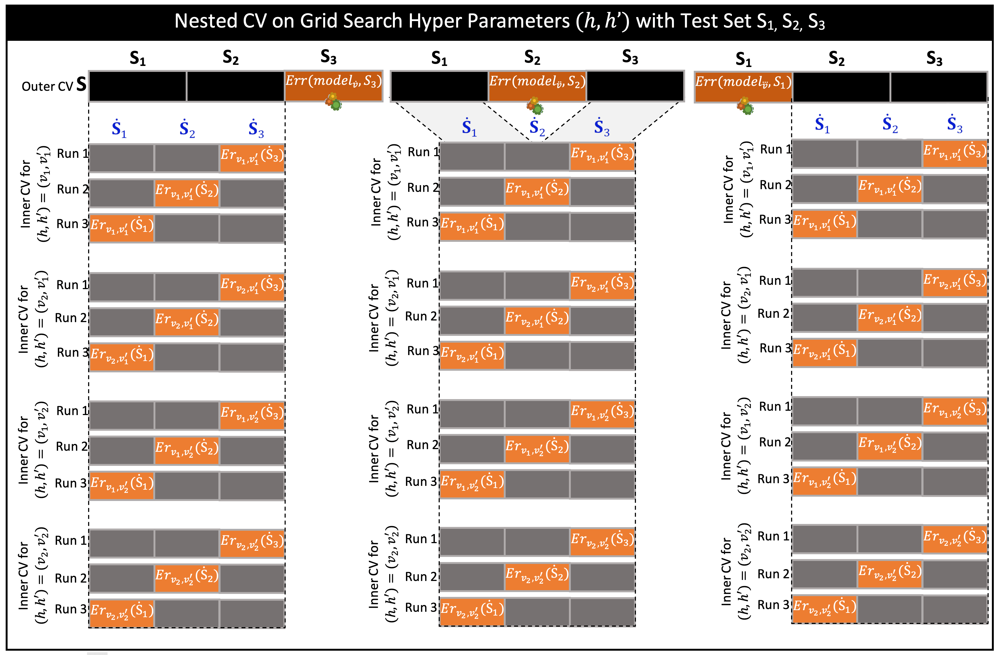
Figure 2.77.
For simplicity of presentation, the two hyper parameters \(h\) and \(h'\) are assumed to have two different values \(\left\{v_{1}, v_{2}\right\}\) and \(\left\{v_{1}^{\prime}, v_{2}^{\prime}\right\}\) that they can take respectively. Each fold of the outer CV has an inner CV process that will be executed inside it to suggest a best value for the hyper parameter \(\left(h, h^{\prime}\right)\). In the grid search process we take all the possible combinations of the hyper parameters values. So in our simple case we have \(2×2\) possible combinations. Note that this has an exponential growth rate. So, if we have 5 hyper parameters, each with 3 values then to perform the grid search we need to consider \(3^{5}=243\) combinations, i.e. we have 243 models to train. So grid search for this case can quickly becomes intractable. If we take into account also an outer and an inner CV operations that we would like to perform to obtain unbiased results then the results would be \(3×3×243=2187\) models to train. The bottom line is that we have to be careful on how many models we are training when we use exhaustive search methods such as the grid search. There are cheaper but inexact methods that we can employ to search for close to optimal values. This include hill climbing, simulated annealing some of these search methods will be covered in the Algorithms module.
As we saw earlier an inner CV gives its own best value for \(h\) that stems from its error comparisons. Since we have 3 –fold outer CV we get 3 values which might all be v1 or v2 or a mix of both (ex. \(v1\), \(v1\) and \(v2\)). We have represented the best values of the three outer folds as \(\dot{v}, \ddot{v}\) and \(\ddot{v}(e x . \dot{v}=v 1, \ddot{v}=v 1, \dddot v=v 2)\). These values in turn give us 3 (possibly different) models model \(_{\dot{v}}\), model \(_{\ddot{v}}\) and model \(_{\ddot{v}}\), therefore, the final result is an average of the errors or accuracy of the 3 different models. We can take a vote on the best value of \(h\) to produce a final model (ex. \(v1\)) but the final averaged errors is not guaranteed to be unbiased unless we do yet another third CV process.
Exercise
See the following Jupyter notebook exercise on nested CV:
- Download exercise (.ipynb): Nested CV
Model comparison with cross validation
When we want to compare the performance of different techniques (like a decision tree and k-nn), we differentiate between two different cases. The first is when we are comparing on the same dataset. In this case, we can use the results of an evaluation process directly as we did in earlier sections. The difference is that we have different techniques instead of the same technique with different hyper parameters.
Cross validation is a suitable strategy to balance out the performance of the model on all types of patterns that exist in our dataset. The strategy is similar to what we have done for model selection. So first we split the data into testing and training. We keep the testing part for testing the different models and compare between them we take the model selection approach whether with grid search if we have multiple hyper parameters and we select the best candidate of each techniques. If we want to evaluate the expected performance of each model we take the evaluation approach of selected models. In this case we might not necessarily come with a particular model unless we do some voting regime. Then we compare the performances of the evaluation and come up with a final performance of a preferred technique.
We divide as before into K folds and we try different hyper parameters values until we come up with best set of hyper parameters for Model 1 that uses Techniques 1, we refer to is as Model(Tech1), then we repeat the same process of choosing the best combination of hyper parameters for Model(Tech2). Now we cross validate both models on the outer loop by testing them on \(\mathrm{S}_{1}, \mathrm{~S}_{2}\) and \(\mathrm{S}_{3}\) folds and we finally come up with the average performances and we pick the technique with the best average.
On the other hand, in case we are comparing the performance of two techniques on two different datasets, then it is less obvious how to choose among the different techniques. This issue often arises when we do benchmarking of different techniques on two different datasets; one of them is already performed earlier and we want to add insight onto the techniques’ properties by applying them on a different problem. In this case, we need to employ statistically comparisons on the significance of the variation of the results. Please refer to section 3.9 of Tan et al (2019) for more details.
See the following video on RapidMiner grid search procedure for selecting multiple hyper parameters for a model. The example shows how to optimise the depth of the tree along with the minimum leaf size.
Overfitting
Overfitting occurs when we keep trying to improve the performance of the model to the extent that the model starts to capture the noise in addition to the actual relationship between the features and the class.
It is expected that the performance for the test set would be slightly lower (roughly < 5%) than the training set (in other words the error in the test set is higher than that of the training set) even when the model does not suffer from overfitting. However, if we realise that there is a relatively large difference between the two then it is a sign that overfitting has occurred during training.
Examples of overfitting
Below we see an example of overfitting. The data can be classified by rectilinear decision boundaries that are specified by four conditions, however due to the noise that we added by spreading out some of the class C1 points and overly trying to isolate and classify those pockets, the tree in turn is overly grown and has become unnecessarily complex. Bear in mind that there is no perfect solution here. Due to noise there will be always inaccuracy that occurs in the classification decision of the tree and we just need to live with them.
Overfitting of decision trees on the noisy Gaussian data (yellow points)
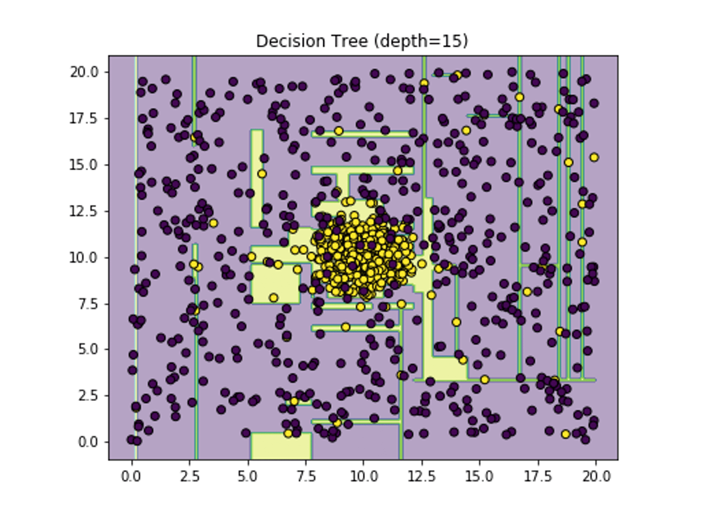
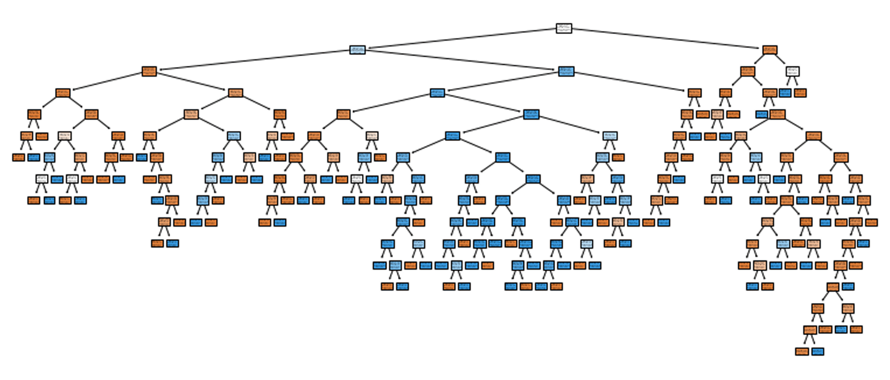
Decision trees with no overfitting for the same noisy Gaussian data
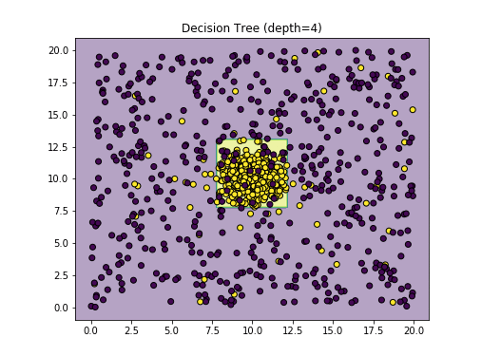
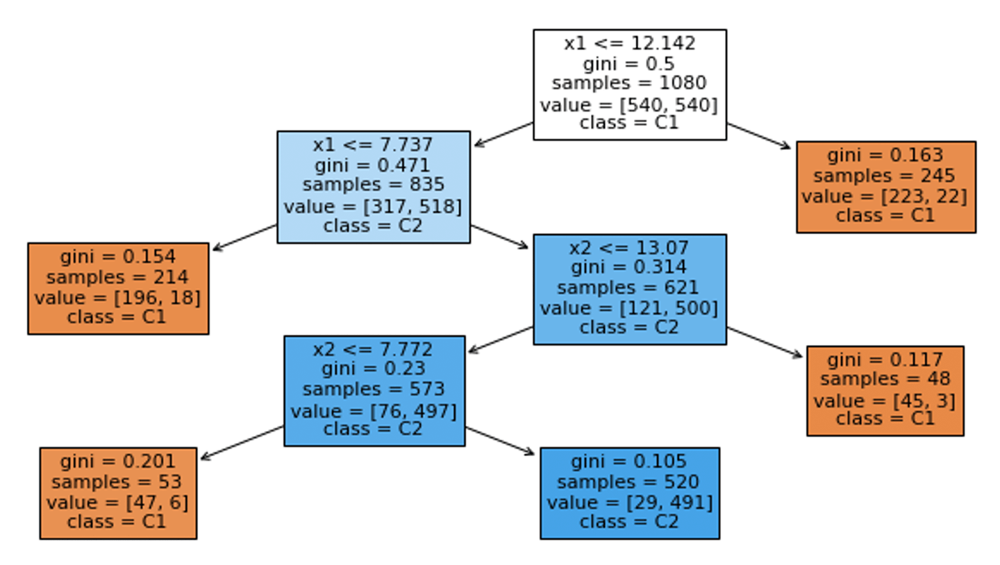
Figures 2.78 - 2.81 above are important to show the signs or symptoms of overfitting. As it can be seen, the training error is successfully decreased when we overly grow the tree, however the testing error (the more precise indicator of the generalisation ability of the model) has actually remained more or less the same. The elbow shape of the testing error is a clear indicator of overfitting and the reasonable size of the tree lies exactly around the elbow (angle) itself. So for this example the angle lies on around 4 (the number of conditions/nodes required to classify the data).
Exercise
See the following Jupyter notebook exercise on DT overfitting:
- Download exercise (.ipynb): DT overfitting
On the other hand, overfitting can occur when we excessively add data horizontally. In other words if we increase the number of attributes that are not really needed to make a decision then potentially the tree will over grow and the training error will be reduced without reducing the testing error. So the symptoms of overfitting are the same but the underlying cause is different. In the first the data is noisy in the second the attributes are unnecessary. Figure 2.82 below shows this phenomena.
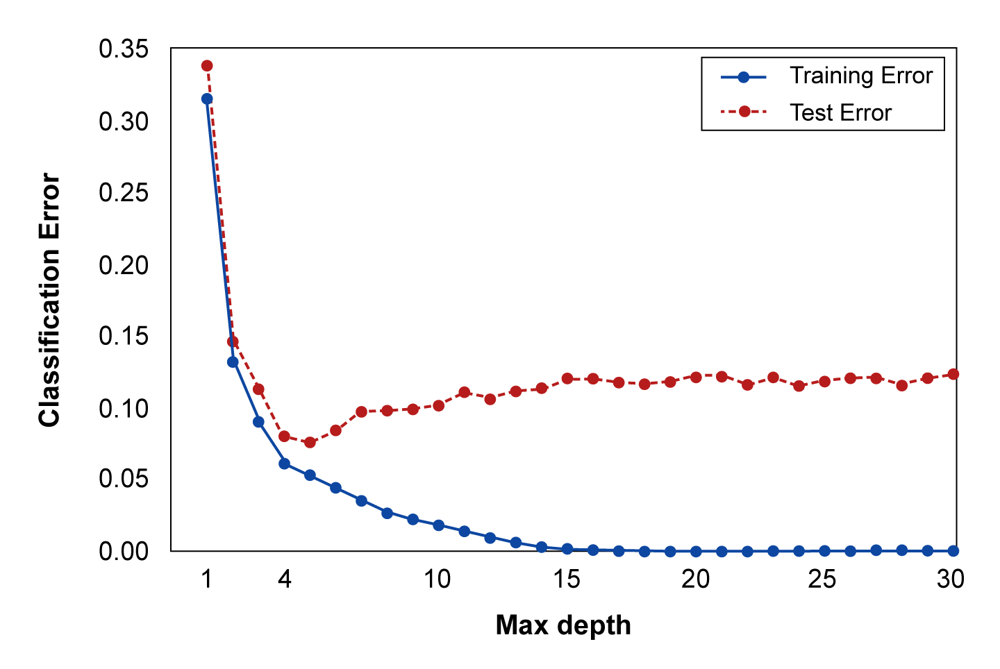
Underfitting
Underfitting occurs when we build a decision tree that is incapable of addressing the problem sufficiently. An example of underfitting for decision trees is when we prematurely stop growing the tree on level 2 while the optimal number of levels is 5. Another example is when the tree is severely pre-pruned to have few branches and its performance becomes inadequate.
Exercise
Please perform the following Jupyter notebook exercise on the Iris dataset that wraps up the unit:
- Download exercise (.ipynb): DT on Iris
Exercise
Now try to do the same thing in RapidMiner. It is fun and easier.
Lesson summary
In this lesson we have covered the common problems of overfitting and underfitting, and seen how we can detect these problems and address them.
We used cross validation to come up with an accurate measure for the performance of our model and its prediction ability. We have seen how the elbow method can provide an effective way to detect overfitting, and we can use a simple early stopping technique to overcome it.